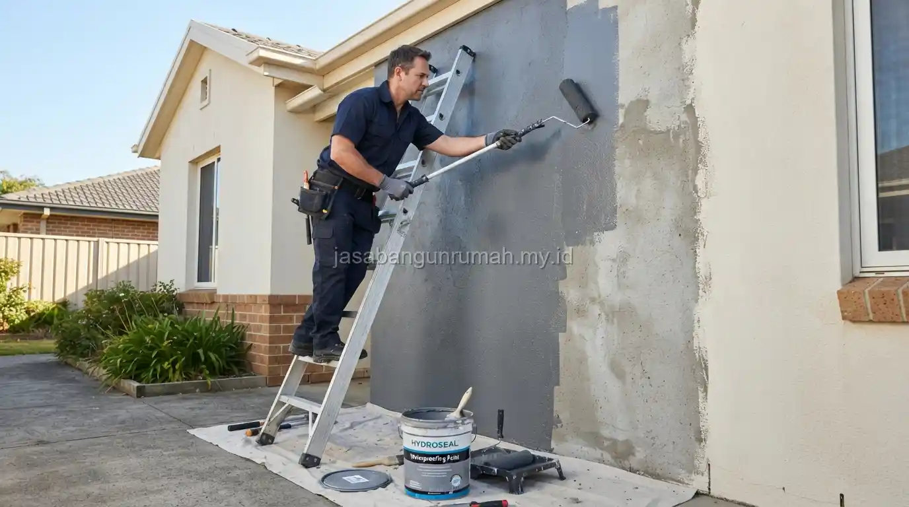

Daftar Isi
Dinding lembab dan berjamur akibat rembesan air hujan dapat diatasi dengan mengidentifikasi sumber rembesan terlebih dahulu, memperbaiki retak pada permukaan luar, lalu mengaplikasikan waterproofing sebelum melakukan pengecatan ulang dengan cat anti jamur.
Apa Penyebab Dinding Rumah Menjadi Lembab dan Berjamur?
Dinding lembab umumnya disebabkan oleh air hujan yang meresap melalui retak rambut pada permukaan luar, sambungan dak beton yang tidak lagi rapat, atau kondisi tanah lembap di sekitar pondasi yang naik melalui kapilaritas material dinding.
Selain faktor rembesan langsung, kelembapan juga bisa disebabkan oleh minimnya sirkulasi udara pada ruangan tertentu, sehingga uap air yang terperangkap di dalam ruangan menempel pada permukaan dinding dan memicu pertumbuhan jamur.
Mengetahui sumber pasti kelembapan menjadi langkah awal yang penting sebelum menentukan metode penanganan yang tepat, karena solusi untuk rembesan air hujan berbeda dengan solusi untuk kelembapan akibat kurangnya ventilasi. Beberapa sumber umum yang perlu diperiksa antara lain:
- Retak rambut pada permukaan dinding luar
- Sambungan dak beton atau atap yang sudah tidak rapat
- Talang air yang tersumbat atau bocor
- Tanah lembap di sekitar pondasi yang naik melalui kapilaritas
- Minimnya ventilasi pada ruangan tertutup seperti kamar mandi dan dapur
Bagaimana Langkah Mengatasi Dinding Lembab dari Bagian Luar?
Langkah pertama adalah memeriksa dan menambal retak rambut pada dinding luar menggunakan sealant khusus, kemudian dilanjutkan dengan mengecek kondisi talang air dan saluran pembuangan agar air hujan tidak menggenang di dekat dinding.
Setelah retak tertangani, permukaan dinding luar yang rawan terkena hujan langsung sebaiknya dilapisi cairan waterproofing sebelum proses pengecatan ulang dilakukan. Urutan langkah penanganan dari luar meliputi:
- Bersihkan permukaan dinding dari lumut, jamur, dan cat yang mengelupas
- Tambal seluruh retak rambut menggunakan sealant atau mortar khusus
- Periksa dan perbaiki kondisi talang air serta saluran drainase
- Aplikasikan cairan waterproofing pada seluruh permukaan dinding luar yang rawan
- Lakukan pengecatan ulang setelah lapisan waterproofing mengering sempurna
Pada bagian bawah dinding yang berdekatan dengan tanah, penambahan lapisan kedap air atau perbaikan saluran drainase di sekitar rumah juga dapat membantu mengurangi rembesan yang naik dari tanah lembap.
Bagaimana Langkah Mengatasi Dinding Lembab dari Bagian Dalam?
Untuk bagian dalam ruangan, langkah yang dapat dilakukan meliputi mengupas lapisan cat dan plester yang sudah rusak akibat lembap, membiarkan dinding mengering sepenuhnya, kemudian mengaplikasikan plester ulang sebelum dilapisi cat khusus anti jamur.

Penambahan ventilasi tambahan atau exhaust fan pada ruangan yang minim sirkulasi udara juga membantu mengurangi kelembapan yang terperangkap di dalam ruangan, terutama pada kamar mandi atau dapur yang sering terpapar uap air.
Penting untuk memastikan sumber rembesan dari luar sudah diatasi terlebih dahulu sebelum melakukan perbaikan pada bagian dalam, karena jika sumber air masih aktif, perbaikan dalam ruangan hanya akan bersifat sementara. Beberapa langkah penanganan dari dalam yang dapat dilakukan:
- Kupas cat dan plester yang sudah rusak, lembap, atau mengelupas
- Biarkan permukaan dinding mengering minimal 2–3 hari sebelum dilapisi ulang
- Aplikasikan plester baru dengan campuran yang sesuai standar
- Gunakan cat anti jamur khusus untuk lapisan akhir dinding dalam
- Tambahkan exhaust fan atau ventilasi tambahan pada ruangan yang minim sirkulasi udara
Kapan Sebaiknya Menggunakan Waterproofing Permanen untuk Dinding Rembes?
Waterproofing permanen sebaiknya dipertimbangkan ketika rembesan terjadi berulang meski sudah beberapa kali ditambal, atau ketika sumber rembesan berasal dari area yang sulit dijangkau seperti sambungan dak beton dan dinding basement.
Penanganan permanen biasanya melibatkan pembongkaran sebagian lapisan dinding untuk memasang membran waterproofing yang lebih tahan lama dibandingkan sekadar cairan pelapis pada permukaan.
Untuk kasus rembesan yang sudah cukup parah atau berulang, sebaiknya berkonsultasi dengan tenaga ahli agar penanganan dilakukan sesuai sumber masalah yang sebenarnya. Pemilik rumah dapat langsung menghubungi layanan renovasi rumah kami untuk penanganan yang lebih menyeluruh dan permanen.